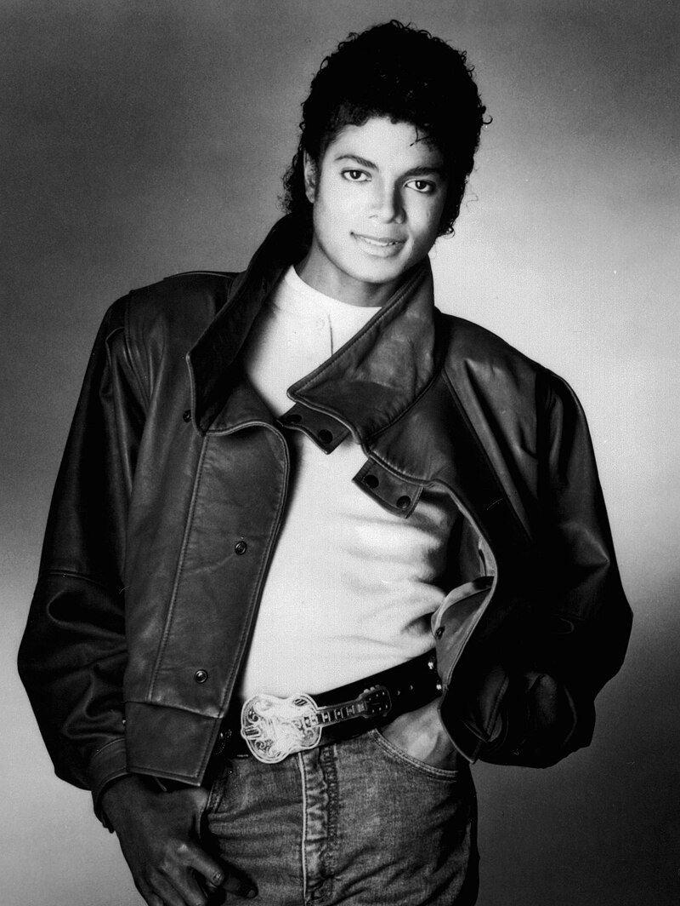
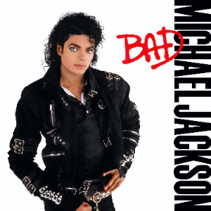

Навигация по разделам страницы:
Клип "Smooth Criminal" был выпущен в 1988 году как часть фильма и альбома Майкла Джексона "Moonwalker". Режиссёром выступил Колин Чилверс. Видео стало одним из самых знаковых в карьере артиста
Клип выполнен в стиле гангстерского фильма 1930-х годов с элементами мюзикла. Ключевые элементы включают:
Клип оказал огромное влияние на поп-культуру и многократно пародировался
в различных шоу и фильмах. Он считается одним из величайших музыкальных
видео в истории
Смотреть клип на YouTube
Для создания знаменитого наклона под 45 градусов была разработана специальная обувь с фиксаторами, которые вставлялись в отверстия на сцене. Этот трюк позже был запатентован Майклом Джексоном вместе с инженерами.
Клип получил множество наград и номинаций, включая премию "Лучшее музыкальное видео" на церемонии Billboard Music Awards. В 1990 году он был номинирован на Грэмми в категории "Лучшее музыкальное видео".
Образ Майкла Джексона из этого клипа стал культурным феноменом. Танцевальные движения и стиль одежды многократно копировались другими артистами. Даже спустя десятилетия клип продолжает вдохновлять новых исполнителей.
| Название | Изображение | Ссылка |
|---|---|---|
| Майкл Джексон |  | Ссылка на Википедию |
| Альбом BAD |  | Ссылка на Википедию |